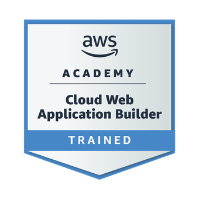

Disponible pour alternance
Levan
Kaipajyan
Diplômé BUT Informatique
Actuellement en Bac+5 Cybersécurité & Réseaux
À la recherche d'une alternance en cybersécurité dès septembre 2026.
Levan Kaipajyan
Cybersécurité & Réseaux
À Propos
Je suis Levan Kaipajyan , 21 ans, diplômé d'un BUT Informatique – Parcours Réseaux à l'IUT d'Amiens. Actuellement en recherche d'un master en Cybersécurité & Réseaux en alternance, me permettant de mettre en pratique mes compétences tout en m'investissant dans des projets concrets au sein d'une équipe professionnelle.
Organisé, rigoureux et doté d'un esprit d'équipe, je traite les problématiques techniques de manière structurée et analytique. Passionné par la cybersécurité, l'administration des systèmes et la sécurisation des infrastructures , je souhaite aujourd'hui évoluer dans un environnement stimulant où je pourrai renforcer mes compétences et participer à des projets concrets qui me permettront de développer davantage mon savoir-faire et mon professionnalisme.
Compétences


Parcours
- Plateforme événementielle – Marathon du Lac d'Annecy
- Stack : Next.js, TailwindCSS, Turborepo
- Fréquentation augmentée de +15%
- Retours utilisateurs très positifs
- Conception et coordination d'un site web de streaming
- Développement complet : design, fonctionnalités, intégration, optimisation et sécurisation.
- Création d'une plateforme performante et intuitive.
- Conception et Coordination de Projet Web
- Réalisation de toutes les étapes nécessaires à la création d'un site web.
- Mise en place d'une plateforme conforme aux besoins du client.
- Préparation produits, nettoyage de ligne
- Amélioration du flux de travail, réduction des arrêts machine
Projets
Contact
Disponible pour une alternance dès maintenant. N'hésitez pas à me contacter pour discuter d'une opportunité !